当校のグループでは、飲食業界を専門とした就職・転職をサポートしている「飲食人キャリア」があります。
卒業される方のスキルに合わせたお仕事先をご紹介致します。
既に卒業された方は、当校よりご紹介した企業に入社されて頑張っておられます。
Media
メディア出演
3ヶ月でプロの寿司職人になり
あなた自身の力で
世界照準の稼げる人材に
飲⾷⼈⼤学は、3ヶ⽉の短期集中＆現場実践カリキュラムで⾼技能調理技術の修得を⽬指す学校です。
「60⽇420時間の実技指導」飲⾷⼈⼤学では、
⼀般的な１年制の調理師学校のカリキュラムを3ヶ⽉という短期間に凝縮しています。
寿司職⼈として必須の技術や店舗でも通じる実践的な内容、
⾃分でお店を持った場合に役⽴つ経営全般まで⼀貫して学ぶことができ、
調理基礎や江⼾前鮨技法から応⽤技術まで最⼤限に学べるよう質の⾼い内容で設計されています。
客単価1万円以上のお店で一番手になれる人材の育成を目標にしています。
「捌き」のスピードは現場で必須
45種類の魚を徹底して、捌き、毎週、小テストを実施。
ラスト1ヶ月で徹底して実践に取り組みます。
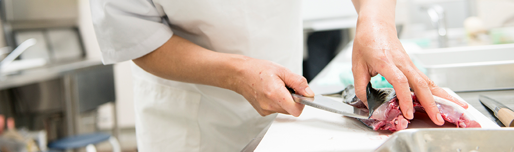
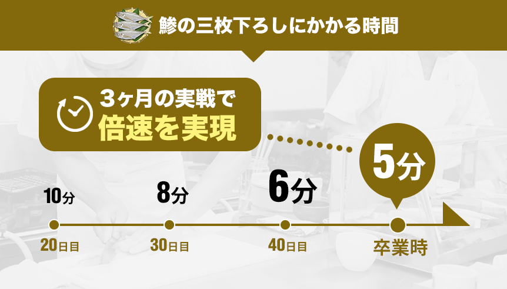
寿司の「技術」と日本の心粋「おもてなし」を身につけ国内外で活躍できる人材に！
海外就職に向け徹底サポート
近年、世界における⽇本⾷への堅調な⽀持により、
寿司職⼈の需要が⾼まってきています。
江戸前鮨五大技法を習得し、誠意あるおもてなしの心をもち、
世界に通用する寿司職人に育て上げます。
海外でお金を残せる職人になるべく、即戦力として活躍できる人材に！
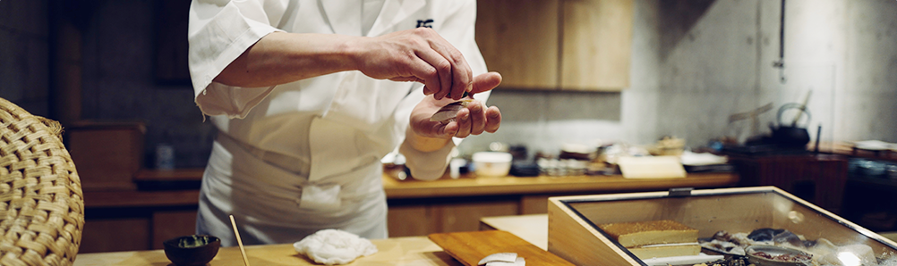
海外就職まで実店舗での
営業経験
海外就職決定までの期間、提携店舗にて仕込、接客、握りの提供、発注業務など実際の店舗営業で、指導を受けながら、「学び」や「習得」の次段階で ある「実践」「経験」といったスキルを⾝につけます。
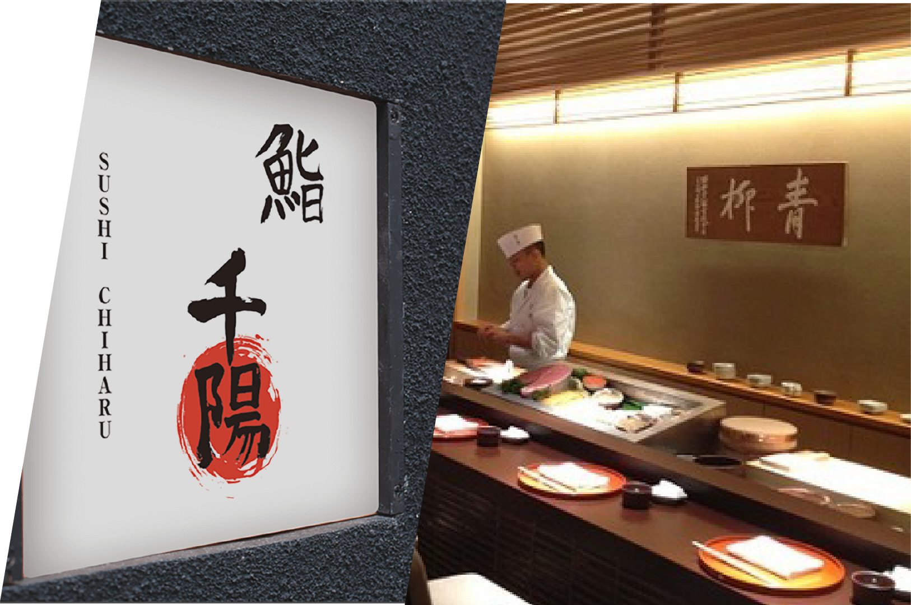
海外就職に向け
専属海外キャリアコーチを配置
全世界に飲⾷店ネットワークを有する株式会社グローバルイニシアティブと提携し、海外専属キャリアコーチが海外就職活動からビザ取得までをサポートします。
ベルリッツによる語学指導
140年以上の歴史と全世界累計20,000社以上の法⼈導⼊実績を持つ「ベルリッツ」と連携協⼒し、語学サポートプログラムも受講可能です。
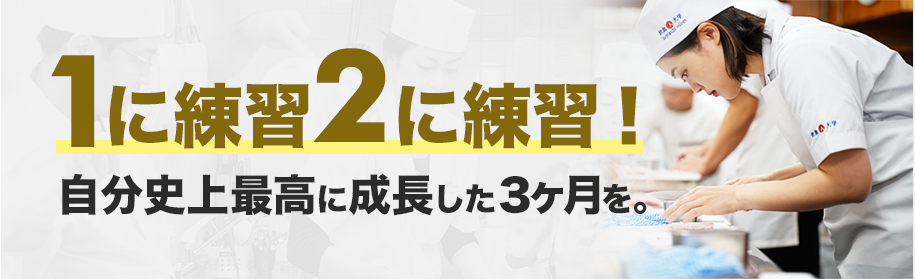
3ヶ月の短期集中コースで魚の構造を理解し、江戸前技法を学び、
目利き、捌きの技術を磨きます。
味に向き合い徹底的に反復練習を行い、就職や開業を目指します。
また、開業を講師がプロデュースする支援も行います。
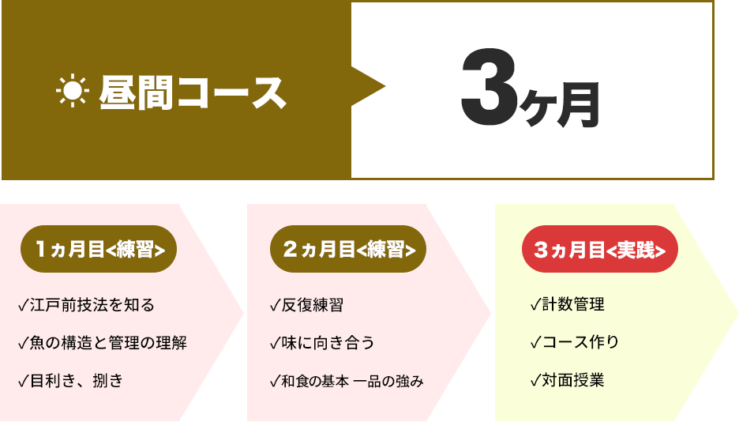
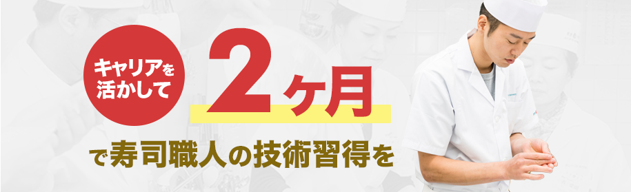
2ヵ月の短期集中コースで夜間にプロの寿司職人の技術を身につけます。
卒業後はキャリアプランをサポート！
キャリア担当と共に就職を目指すのもよし、
開業を講師がプロデュースする支援も行います。
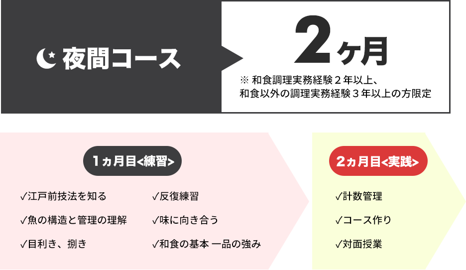
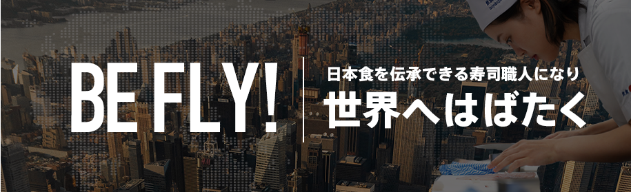
寿司マイスター専科受講（3ヶ⽉）後、
提携店舗にて21ヶ⽉（21ヶ⽉⽬以降は海外就職決定まで）の実習を提供します。
ビザ取得もサポートし、さらにベルリッツと提携し語学サポートも完備。
世界で活躍が出来るグローバル寿司職⼈を育成します。
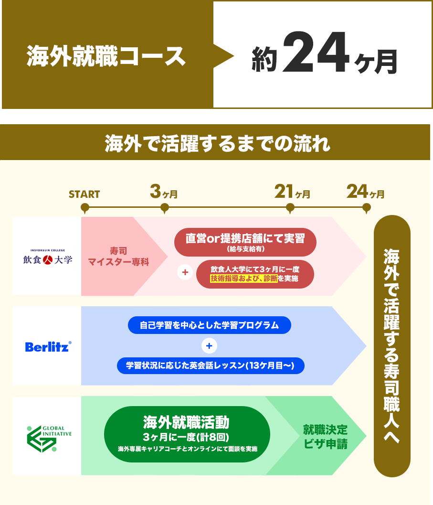
スクロールしてご覧いただけます
| 飲食人大学 | 調理師学校A | 寿司職人養成 スクールA |
寿司職人養成 スクールB |
|
|---|---|---|---|---|
| 授業内容 |
江戸前技法を学び、魚の目利き・捌き・握りの技術を実践的に学ぶ。コース料理に不可欠な和食、原価計算、店舗経営についても学びます |
和食に関する技術・知識を学びます |
短期間で寿司を握る技術のみに |
自宅でオンライン教材を |
| 修学期間 |
3ヶ月 |
24ヶ月 |
2ヶ月 |
6ヶ月 |
| 授業時間 |
週6日(月-土) 9:00-16:00 |
週5日(月-金) 9:00-16:20 |
週5日(月-土) 9:30-15:30 |
週2日選択 |
| 学費 （授業料＋入学金） |
授業料：968,000円 |
授業料：3,540,000円 |
授業料：715,000円 |
授業料：440,000円 |
| 1時間あたりの 授業料 |
約2,305円 / 1時間 |
約1,083円 / 1時間 |
約4,400円 / 1時間 |
約4,400円 / 1時間 |
| 魚の仕入れ状況 |
40種類以上の豊富な魚介類を |
基本的な魚を学習、 |
捌かれた状態の魚（柵）で |
週２回クール便で |
| 各クラス定員 |
15名 |
40名 |
20名 |
オンラインのため、人数設定なし |
| 就職先紹介 キャリア支援 |
専属のキャリアコーディネーターが |
学校に集まった求人票から選択 |
専門の |
就職実績なし |
飲食人大学では、1,000人以上の卒業生を輩出しています。
現場実践型カリキュラム＆個別キャリアサポートのある飲⾷⼈⼤学だからこそ、
国内・海外就職や転職、独⽴開業などが実現可能に。
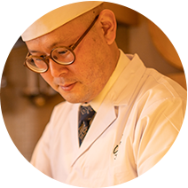
入学前はタイカレー店で働いており、料理は好きだったが魚を捌いたことがなかった。
自分のお店を持つ夢と料理人としてのステップアップの為、寿司職人を目指し、飲食人大学に入学。
現在は、卒業から1年ほどで神奈川県川崎市にある寿司店「鮨 すがひさ」を開業。
一見珍しいタイ料理とコラボレーションしたメニューが著名人の間で話題となり、さまざまなメディアで取り上げられている。
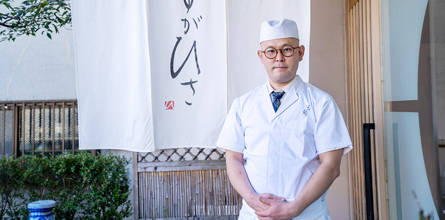
菅さんの声
飲食人大学在学中は、初めての捌きから握りや一品料理を通して『食材を無駄なく使い切る』ことが重要なんだと感じました。また、実践だけでなく原価計算やマーケティング等、経営にも必要なことを学びました。
卒業後は、飲食人大学の卒業生のみで運営する『鮨
千陽』で修業をしながら、自分のお店の開業に向けて準備を始めました。
初めての開業はどんなお店にしたらいいか分からず不安もありましたが、コンセプトに合わせたメニューの価格設定や空間づくり、内装デザイン等、事細かく講師からサポートを受け安心して準備ができました。
開業後は、いつもお店が満席の状態を作ることが大変でした。
そんな大変だと感じる中続けてこれたのは、料理が好きな気持ちとお客様の“おいしい”がやりがいだと感じるからです。
タイカレー店で働いた経験を活かし、タイ料理とコラボレーションさせたメニューも提供し、そのメニューが著名人の間で話題となり様々なメディアでも取り上げていただきました。話題になったのは、ちゃんとした江戸前鮨をやっていたから、基礎に忠実に、基本を徹底的に身に着けてアレンジしたからだと思っています。
飲食人大学が大切にしている江戸前鮨の型や技術がベースにあり、それがなかったら、うちの店はうまくいってなかったと思います。本当に濃い3ヶ月でしたね。
詳しく見る
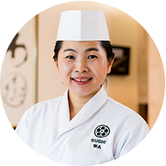
アイルランドのゴールウェイにて和食の弁当屋を営んでいた早川さん。
海外で起こった『日本食ブーム』の中でなんちゃって寿司を提供しているお店が増えてきていることを感じ、本当の日本食の味をアイルランドの人に知ってもらいたいと思い、2018年に寿司マイスター専科に入学。
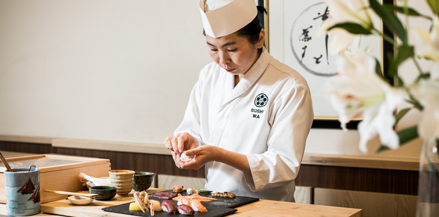
早川さんの声
飲食人大学では、“まな板の使い方”や“包丁の研ぎ方”など道具の基礎から“魚の目利き”まで全て学びました。また、常に江戸前鮨の基礎を学びながら“ゴールウェイではどうしようかな”と置き換えて意識をしていました。
そして、卒業後一年で、「WA SUSHI」にリニューアルオープンしました。
ゴールウェイでは北海道と同じぐらい良い魚介類が獲れますが、魚を食べることはほとんどなく、だからこそ、地元の魚を食べる楽しみを提供したいと考えています。
また、『WA SUSHI』では江戸前鮨を文字って“ゴールウェイ前鮨”と名付けました。
江戸前鮨では東京湾で捕れる魚が基本となっておりサーモンはタブーです。
しかし、ゴールウェイで獲れるサーモンは必須なので、江戸前鮨では使われないサーモンも使っています。
また、講師から「海外でお寿司をやるなら、その国の人たちのDNAがハッとするような味を少し入れるといいですよ」と言われたことがとても印象に残っています。
その国の人たちがいつも食べている味をお寿司に落とし込んで、体においしいと反応させよという意味で、アイルランドの人たちはリンゴをよく食べ甘酸っぱい味が好むことから、お酢にリンゴ酢を混ぜたりとアイルランドの現地の風習を尊重し工夫しています。
寿司を通じて日本とアイルランドの架け橋になる為、日々挑戦していきたいです。
詳しく見る

年齢や経験の制限は設けておりませんので、どなた様でも入学のお申込はしていただけます。
しかし、当校では、卒業後に飲食の現場でしっかりと通用する為に技術習得をしていただく場です。
お稽古事の感覚で入学されると非常に大変だと思います。
よって、目的意識の合致している方に限定させていただいています。
大丈夫です。受講生の約8割が飲食業界未経験の方です。
包丁の扱い方から調理の基礎など、全くの未経験の方でも細かく丁寧に指導致します。
寮などの宿泊設備はご用意しておりませんが、在学中の滞在場所としてお住いのご紹介はしておりますので、お気軽にご相談下さい。
また、淡路島校では1カ月の料金3万円~4万円で利用可能な宿泊施設を設置しています。
学生証の発行は行っておりません。当校は通学定期は対象外となります。
遠方や海外にお住いの方につきましては、ZOOMやLINEのビデオ通話で面接をさせていただいております。